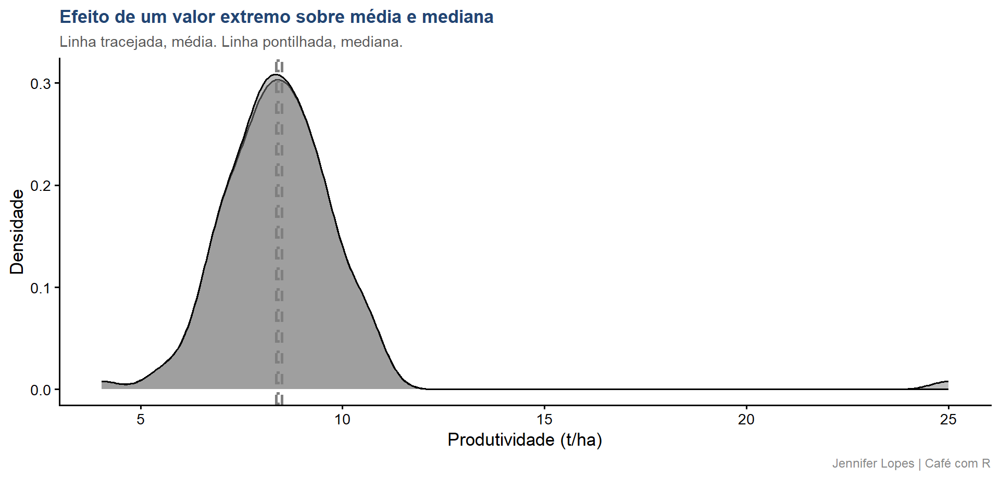

Aula 31. Média não é tudo: tendência central e dispersão
Moda, mediana, médias geométrica e harmônica, variância, CV e MAD, com o caso do outlier que desloca a média sem mover a mediana
Democratização
Esta aula continua diretamente da Aula 27. Os dados simulados são os mesmos, produtividade do híbrido H2 em 10.000 parcelas agronômicas. A amostra de 120 parcelas extraída anteriormente é reutilizada aqui para garantir continuidade nos resultados.

Acompanhe o Café com R
SITE OFICIAL> https://jenniferlopes.github.io/meu_site/
Objetivos da aula
- Calcular e interpretar as cinco medidas de tendência central, média aritmética, mediana, moda, média geométrica e média harmônica
- Calcular e interpretar as principais medidas de dispersão, variância, desvio padrão, amplitude, IQR, MAD e CV%
- Identificar quando a média deixa de representar bem o centro dos dados
- Comparar a robustez da mediana e do MAD frente a valores extremos
- Reconhecer os erros mais frequentes na escolha e no relato dessas medidas
Bloco 1
Medidas de Tendência Central
Média aritmética
- A média aritmética é a soma dos valores dividida pelo número de observações.
\[\bar{x} = \frac{1}{n} \sum_{i=1}^{n} x_i\]
Cada observação entra no cálculo com o mesmo peso, incluindo valores extremos.
No contexto agronômico: a produtividade média das 120 parcelas amostradas resume o centro da distribuição, desde que ela seja aproximadamente simétrica.
Important
Atenção: a média é sensível a valores extremos. Um único valor discrepante desloca seu resultado, mesmo que represente um erro de medição ou um evento isolado.
Mediana
- A mediana é o valor que ocupa a posição central dos dados ordenados.
\[\tilde{x} = \begin{cases} x_{(n+1)/2} & \text{se } n \text{ é ímpar} \\ \dfrac{x_{(n/2)} + x_{(n/2+1)}}{2} & \text{se } n \text{ é par} \end{cases}\]
Depende apenas da posição dos valores, não de sua magnitude.
No contexto agronômico: a mediana permanece estável mesmo diante de uma leitura de produtividade fisiologicamente implausível.
Moda
A moda é o valor ou categoria de maior frequência no conjunto de dados.
É a única medida de tendência central aplicável a variáveis qualitativas.
No contexto agronômico: entre os tipos de solo amostrados, argiloso, arenoso e franco, a moda identifica a classe predominante.
Em variáveis contínuas, a moda é obtida após arredondamento ou agrupamento em classes, e pode não ser única.
Média geométrica
- A média geométrica é a raiz de ordem \(n\) do produto dos valores.
\[\bar{x}_g = \sqrt[n]{\prod_{i=1}^{n} x_i} = \exp\left(\frac{1}{n}\sum_{i=1}^{n} \ln(x_i)\right)\]
Adequada para dados que representam taxas de crescimento, variações percentuais ou séries multiplicativas.
No contexto agronômico: o crescimento médio de produtividade entre safras consecutivas deve ser calculado pela média geométrica, não pela aritmética.
Important
Atenção: aplicar a média aritmética sobre taxas de crescimento composto produz um resultado superestimado.
Média harmônica
- A média harmônica é o inverso da média dos inversos dos valores.
\[\bar{x}_h = \frac{n}{\displaystyle\sum_{i=1}^{n} \frac{1}{x_i}}\]
Adequada para dados expressos como razões, como eficiência de uso de insumo por área ou velocidade média em percursos de mesma distância.
É a mais sensível às três médias a valores próximos de zero.
Código: tendência central
Output: tendência central
# A tibble: 1 × 5
media mediana moda media_geo media_har
<dbl> <dbl> <dbl> <dbl> <dbl>
1 8.36 8.40 7.9 8.26 8.16- A proximidade entre média, mediana e as médias geométrica e harmônica confirma que esta amostra segue distribuição aproximadamente simétrica, sem valores próximos de zero ou taxas multiplicativas envolvidas.
Bloco 2
Medidas de Dispersão
Variância e desvio padrão
| Medida | Definição | Interpretação |
|---|---|---|
| Variância | \(s^2 = \dfrac{\sum(x_i - \bar{x})^2}{n-1}\) | Dispersão média ao quadrado |
| Desvio padrão | \(s = \sqrt{s^2}\) | Dispersão na mesma unidade dos dados |
- O desvio padrão descreve a variabilidade dos dados individuais em torno da média, e não deve ser confundido com o erro padrão da média, que descreve a precisão da estimativa.
Amplitude e IQR
| Medida | Definição | Interpretação |
|---|---|---|
| Amplitude | \(x_{max} - x_{min}\) | Alcance total dos dados |
| IQR | \(Q_3 - Q_1\) | Alcance dos 50% centrais dos dados |
A amplitude é determinada exclusivamente pelos dois valores extremos, e ignora toda a estrutura intermediária da distribuição.
O IQR é uma medida de dispersão robusta, pouco sensível a valores atípicos.
MAD, desvio absoluto mediano
- O MAD é a mediana dos desvios absolutos em relação à mediana, multiplicada por uma constante de consistência.
\[MAD = 1{,}4826 \times \text{mediana}\left(|x_i - \tilde{x}|\right)\]
A constante 1,4826 torna o MAD comparável ao desvio padrão sob distribuição normal.
É o análogo robusto do desvio padrão, apropriado quando há suspeita de valores extremos nos dados.
Coeficiente de variação, CV%
\[CV = \frac{s}{\bar{x}} \times 100\]
Expressa a dispersão em termos relativos à média, permitindo comparar variáveis com unidades ou magnitudes diferentes.
No contexto agronômico: CV abaixo de 15% indica variabilidade experimental baixa a moderada, valor referencial comumente adotado na experimentação agronômica.
Important
Atenção: CV% alto não significa necessariamente falha experimental. Algumas variáveis, como contagens e proporções, apresentam CV% elevado por característica intrínseca.
Código: dispersão
Output: dispersão
# A tibble: 1 × 7
variancia dp amplitude iqr mad media cv
<dbl> <dbl> <dbl> <dbl> <dbl> <dbl> <dbl>
1 1.54 1.24 6.97 1.63 1.22 8.36 14.8- O CV próximo de 14% está de acordo com o valor esperado para dados de produtividade gerados a partir de uma distribuição normal com desvio padrão de 1,20 t/ha e média de 8,45 t/ha.
Bloco 3
Quando a Média Engana
Cenário: um erro de registro na amostra
Suponha que, durante a coleta, a produtividade de uma das 120 parcelas seja registrada como 25 t/ha, um valor fisiologicamente implausível para o híbrido H2.
Esse tipo de valor extremo pode ter origem em erro de digitação, falha do equipamento de colheita ou evento isolado não representativo do experimento.
A seguir, comparamos a amostra original com essa mesma amostra contendo o valor extremo.
Código: construção do cenário
Código: média e mediana, antes e depois
Output: média e mediana, antes e depois
# A tibble: 2 × 3
cenario media mediana
<chr> <dbl> <dbl>
1 Original 8.36 8.40
2 Com valor extremo 8.50 8.40- A média se desloca de forma perceptível com a inclusão de um único valor extremo, enquanto a mediana permanece praticamente inalterada, pois depende apenas da posição dos dados ordenados.
Código: visualização do deslocamento
dados_cenarios <- bind_rows(
amostra |> mutate(cenario = "Original"),
amostra_outlier |> mutate(cenario = "Com valor extremo"))
resumo_cenarios <- dados_cenarios |>
group_by(cenario) |>
summarise(media = mean(produtividade), mediana = median(produtividade),
.groups = "drop")
dados_cenarios |>
ggplot(aes(x = produtividade, fill = cenario)) +
geom_density(alpha = 0.5) +
geom_vline(data = resumo_cenarios,
aes(xintercept = media, color = cenario),
linetype = "dashed", linewidth = 1) +
geom_vline(data = resumo_cenarios,
aes(xintercept = mediana, color = cenario),
linetype = "dotted", linewidth = 1) +
scale_fill_manual(values = c(
"Original" = cores_cafe["azul_claro"],
"Com valor extremo" = cores_cafe["marrom"])) +
scale_color_manual(values = c(
"Original" = cores_cafe["azul_escuro"],
"Com valor extremo" = cores_cafe["marrom"])) +
labs(
title = "Efeito de um valor extremo sobre média e mediana",
subtitle = "Linha tracejada, média. Linha pontilhada, mediana.",
x = "Produtividade (t/ha)",
y = "Densidade",
fill = "Cenário",
color = "Cenário",
caption = "Jennifer Lopes | Café com R") +
temaGráfico: visualização do deslocamento

MAD e desvio padrão diante do mesmo valor extremo
O desvio padrão é calculado a partir dos quadrados dos desvios em relação à média, o que amplia o efeito de um valor extremo sobre seu resultado.
O MAD é calculado a partir da mediana dos desvios em relação à mediana, medida que permanece estável diante do mesmo valor extremo.
Essa diferença de comportamento é o motivo pelo qual o MAD é preferido como medida de dispersão em conjuntos de dados com suspeita de valores atípicos.
Código: MAD e desvio padrão
Output: MAD e desvio padrão
# A tibble: 2 × 3
cenario dp mad
<chr> <dbl> <dbl>
1 Original 1.24 1.22
2 Com valor extremo 1.96 1.23- O desvio padrão aumenta de forma acentuada com a inclusão do valor extremo, enquanto o MAD permanece praticamente no mesmo patamar, confirmando sua robustez.
Bloco 4
Erros Comuns
Erro 1, reportar a média sem medida de dispersão
Uma média sem desvio padrão, erro padrão ou intervalo de confiança é estatisticamente incompleta.
Reportar apenas o valor central impede o leitor de avaliar a variabilidade e a confiabilidade da estimativa.
Erro 2, usar a média em distribuição assimétrica
Quando a distribuição é claramente assimétrica, como contagem de insetos ou incidência de doença, a média deixa de representar bem o centro dos dados.
Nessas situações, a mediana ou a moda descrevem melhor o comportamento típico da variável.
Erro 3, confundir a robustez do MAD com a do desvio padrão
Tratar o MAD como equivalente ao desvio padrão desconsidera sua principal vantagem, a resistência a valores extremos.
Usar o desvio padrão em conjuntos de dados com suspeita de outliers sem avaliar o MAD como alternativa produz uma medida de dispersão inflada.
Erro 4, não reportar o CV% em tabela de resultado
O CV% é exigido pelas principais revistas agronômicas brasileiras, e por parte das internacionais, como indicador da qualidade experimental.
Omitir o CV% impede a avaliação comparativa da precisão entre experimentos com médias distintas.
Resumo: tendência central e dispersão
| Medida | Robustez a outliers | Função no R | Quando usar |
|---|---|---|---|
| Média aritmética | Baixa | mean() |
Distribuição simétrica, sem outliers |
| Mediana | Alta | median() |
Distribuição assimétrica ou com outliers |
| Moda | Alta | Sem função nativa | Variáveis categóricas ou discretas |
| Média geométrica | Baixa | exp(mean(log())) |
Taxas de crescimento, séries multiplicativas |
| Média harmônica | Baixa | n()/sum(1/x) |
Razões, velocidades médias |
| Desvio padrão | Baixa | sd() |
Dispersão em torno da média, dados simétricos |
| MAD | Alta | mad() |
Dispersão robusta, suspeita de outliers |
| CV% | Baixa | sd()/mean()*100 |
Comparação de variabilidade entre experimentos |
Obrigada!

Continue praticando e explorando.
Esta aula é parte do projeto Café com R. É open source. Use, compartilhe e adapte.
Siga o Café com R
Que cada gole desperte uma nova ideia.
Que cada script abra uma nova conversa.
Que o Café com R se torne um ponto de encontro nosso.
SITE OFICIAL> https://jenniferlopes.github.io/meu_site/

Jennifer Lopes | Café com R